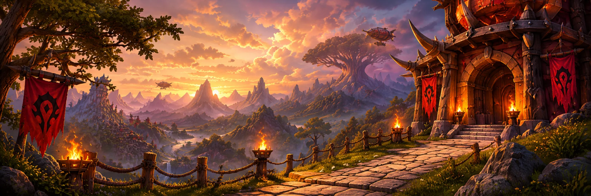

Manche Hobbys lassen einen einfach nicht los. Bei uns ist das offenbar World of Warcraft. Seit Februar 2005 sind wir in Azeroth unterwegs – mit einigen mehr oder weniger freiwilligen Pausen und gelegentlichen Ausflügen in andere virtuelle Welten. Wir haben schließlich immer wieder versucht, eine Alternative zu finden. Bisher ohne durchschlagenden Erfolg. Irgendwie zieht es uns doch immer wieder zurück.
Neben WoW waren wir über längere Zeit auch in EverQuest 2 aktiv. Tatsächlich haben wir beide Spiele zeitweise parallel gespielt und in beiden erfolgreich Gilden und Raids aufgebaut und geleitet.
